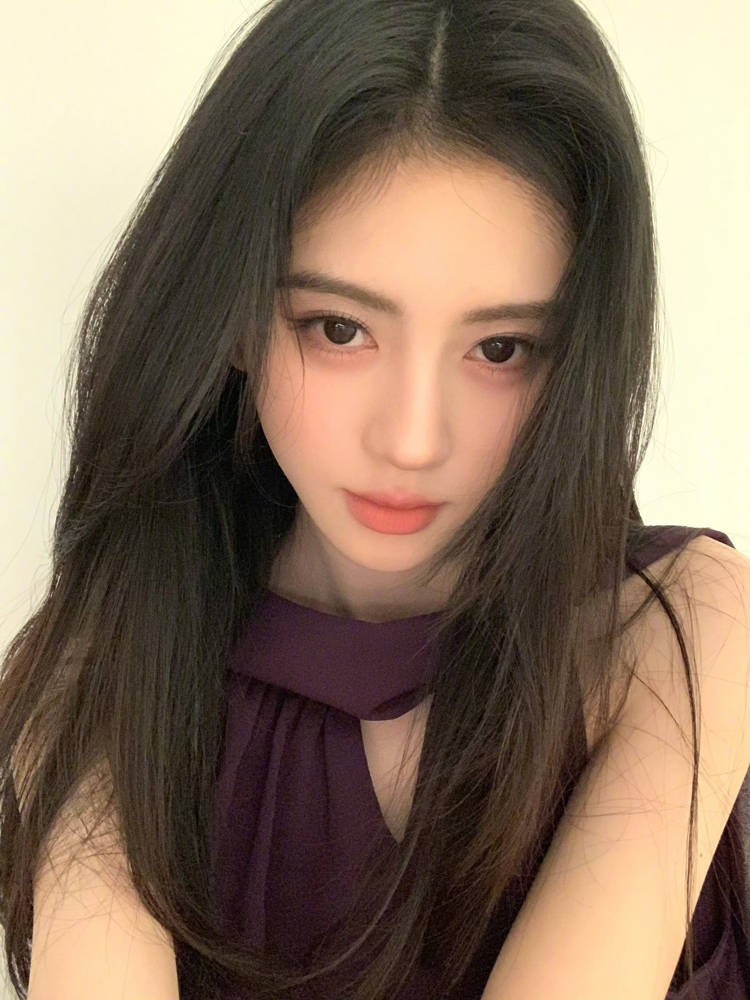

以下为粉丝整理的介绍，资料参考自百度百科，仅供喜爱与纪念，请以官方信息为准。
1994 年 6 月 18 日出生于四川省遂宁市，中国内地影视女演员、流行乐歌手。SNH48 二期生（2013 年入选），2017 年成立个人工作室单飞发展。擅长跳舞、钢琴与小提琴。
外型清新、性格爽利耿直，深受粉丝喜爱。私底下的她生活简单、自律克己，喜欢睡觉、看电影、吃火锅。

从剧场少女到独当一面的演员与歌手，一路走来的关键节点。（资料参考公开报道，以官方为准）
11 月随《剧场女神》公演正式出道，开启偶像之路。
连续两届 SNH48 总选举分获第 4 名、第 2 名，人气稳步积累。
斩获 SNH48 第三届总选举冠军；主演首部玄幻剧《九州·天空城》（雪飞霜）。
总选举连霸冠军、晋升明星殿堂，成立个人工作室独立发展。
韩芸汐、白素贞等角色广受关注；入选福布斯中国名人榜及 30 Under 30。
发行出道九周年纪念实体专辑《IX》，亲自担任总监制。
6 月与前公司合约到期不续约，开启独立发展阶段；主演《花间令》《仙剑四》播出。
主演《月鳞绮纪》（露芜衣）播出；获 QQ音乐超级巅峰之夜「巅峰流行女歌手」。
应援色与喜爱色参考粉丝普遍认知，粉丝称呼请以官方公布为准。
鞠婧祎的官方应援色为蓝色，是粉丝身份的象征色。
鞠婧祎本人喜爱红色，本站点以蓝为主、红为点缀呼应这一喜好。
鞠婧祎的粉丝官方称呼为「蜜橘」，与应援蓝呼应，是蜜橘们彼此相认的暗号。
多年沉淀的掌声与认可（综合公开报道与奖项记录整理）。
2016 第三届总选举冠军，2017 连霸冠军并晋升明星殿堂，为团体首位连霸成员。
2017 年度飞跃歌手、2018 年度跨界艺人、2019 年度风尚歌手、2020 年度最具突破艺人、2022 年度人气歌手。
2019 年入选福布斯中国名人榜（第 94 位）及「30 位 30 岁以下精英」榜。
2024 年度巅峰热度女歌手；2026 超级巅峰之夜「巅峰流行女歌手」。
2016 腾讯视频星光大赏「年度新锐电视剧女演员」（《九州·天空城》雪飞霜）。
2024–2026 多本五大杂志开售即破纪录，如《时尚COSMO》6 月刊 24 小时销量破 56 万本。
本页面为粉丝自发整理的非官方资料，与艺人本人及经纪公司无关。页面信息整理自公开百科资料，版权归原作者及权利方所有，仅作非商业纪念用途，如有侵权请联系下架。本站内容禁止用于任何商业获利行为。